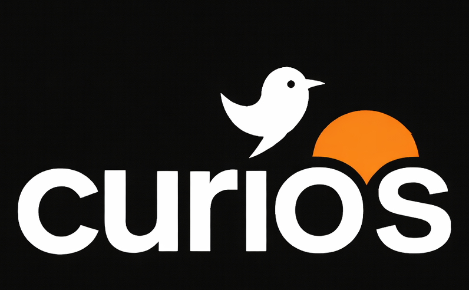

CuriOS is an operating system where the primary interface is chat. No menus, no clicks, throw your mouse away — just type what you want and let the OS figure the rest out.
Everything you'd expect from an OS — delivered through a chat thread.
You can create your account and have persistent conversations across sessions and a customized chat experience.
Auth and provider configuration built-in on the chat interface.
Swap between LLM backends at any time and have our basic LLama integration ready.
Tasks you want to accomplish in regular operational system, but using natural language.
A plugin and tool system is on the roadmap — notes, files, browser automation, and more.
Security is a top priority, with sensitive data encrypted and access controlled.
Switch contexts in chat — like an OS, but conversational.
Manage config and user settings through guided chat flows.
Navigate the web in a conversational way — ask, click, and summarize.
Manage files and folders from chat (disabled for now).
Save and organize notes inside your sessions (disabled for now).
Curios works with natural language in a seamless and intuitive way.
You can login by typing login, the assistant will guide you, or change user configuration, and get into app contexts.
CuriOS looks up who you are, your current flow state, and what's already configured.
A completely new user experience, with a fully chat interface that can be used to browse, save files and interact with various tools.
Everything on Curios is based on conversation.
| Intent | Example message |
|---|---|
| Help | "help" |
| Settings | "show my settings" |
| Profile | "change my name" |
| Security | "change my password" |
| Providers | "change provider" |
| Account | "delete my user" |
| Apps | "use System" |
| Intent | Example message |
|---|---|
| Enter Browser | "use Browser" |
| Open site | "open nytimes.com and give the latest news" |
| Make actions | "login in my blog and publish and write a draft post about AI" |
| Research | "Find a job as Software developer on jobindex.com" |
| Summarize | "What you think about this page: https://curi-os.github.io/curi-os/" |
| Extract info | "Get the key info from this page" |
| Navigate | "open a new tab and open Instagram" |
Core technologies used across the CuriOS ecosystem.
Runs the backend services and APIs that power conversations and state.
Builds the chat-first UI for the browser experience.
Keeps styling consistent and fast to iterate across interfaces.
One of the supported AI providers behind the conversational interface.
Enables running local models and swapping providers behind a clean interface.
Tooling layer for extending capabilities with tools and actions.